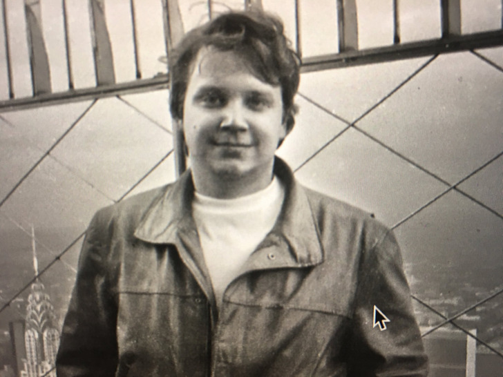

Pequeño resumen de la vida de Guillermo del Toro.
Línea del tiempo.


Guillermo del Toro Gómez
El director, productor, guionista y novelista Guillermo del Toro nació en México el 9 de octubre de 1964, en la ciudad de Guadalajara, Jalisco. Comenzó a filmar en su ciudad natal desde la adolescencia, combinando esta actividad con sus estudios en el Instituto de Ciencias. En esa época realizó los cortometrajes “Doña Lupe” (1985) y “Geometría” (1987). Durante diez años se especializó en realizar trabajos de diseño de maquillaje, labor que lo llevó a crear su propia compañía, “Necropia”, en colaboración con su gran amigo y animador Rigo Mora.
Fundador.
Fue fundador del Festival Internacional de Cine en Guadalajara (antes llamada Muestra de Cine Mexicano en Guadalajara), y creó la compañía de producción Tequila Gang. Su ópera prima, “Cronos” (1993), ganó nueve premios Ariel, incluyendo Mejor Película y Mejor Director, y obtuvo el premio de Mejor Guión y Mejor Actor en el Festival de Sitges. “Mimic” (1997), fue su segundo largometraje y su primer trabajo producido en Estados Unidos.